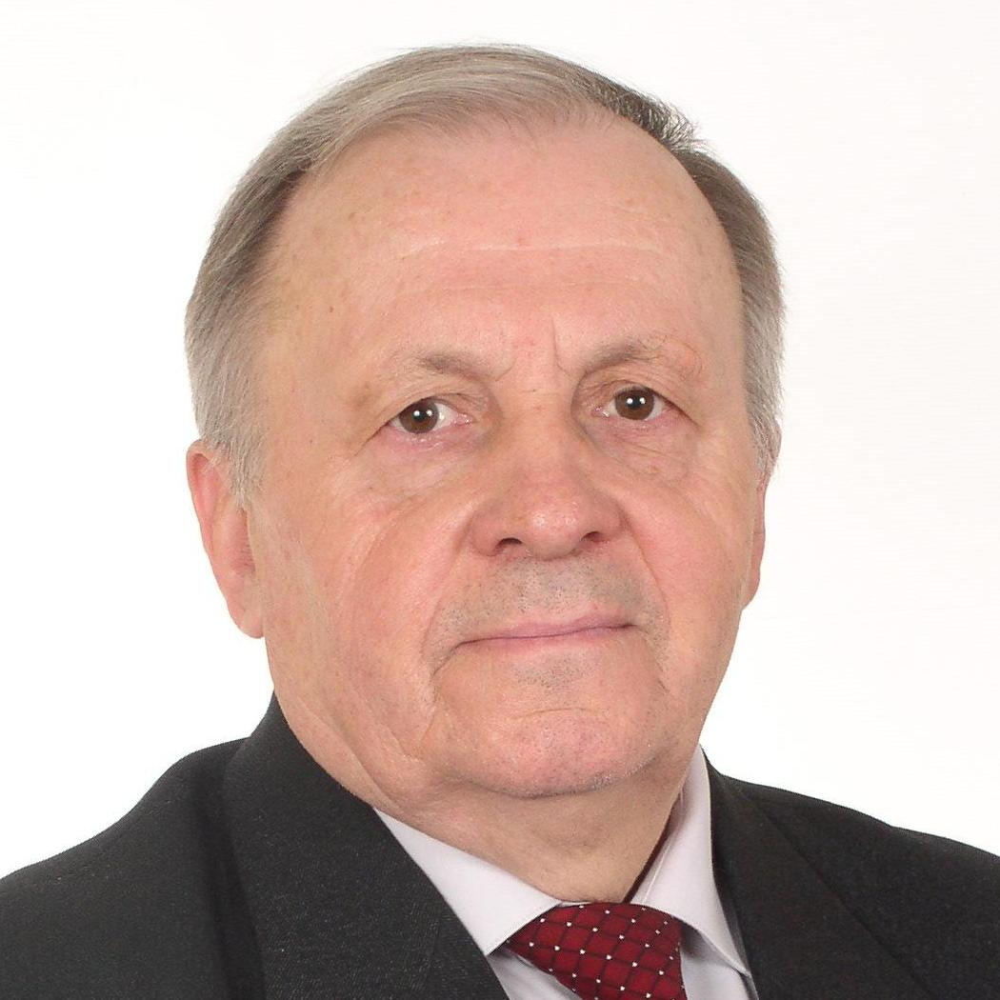
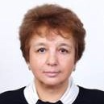
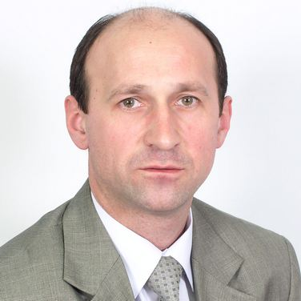
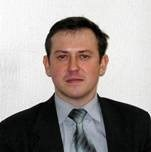
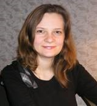
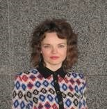
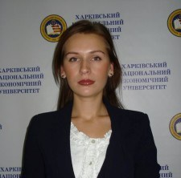
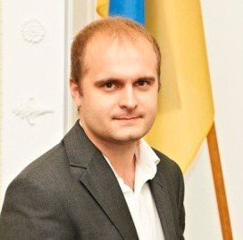
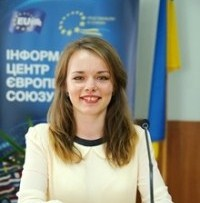
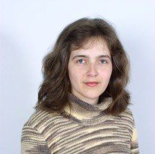

|  | Орлов Петро Aркадійович Навчальні курси: економіка підприємств, економіка зовнішньоекономічної діяльності, інвестування. |
||
Лисиця Надія Михайлівна
Навчальні курси:методика викладання економічних дисциплін англійською мовою, бренд-менеджмент, міжнародний маркетинг. Автор 230 наукових та науково-методичних робіт, з яких 12 монографій та навчальних посібників для навчальних дисциплін «Соціологія реклами», «Маркетингові комунікації у міжнародному бізнесі», «Бренд-менеджмент»: «Реклама в современном обществе», «Соціально-економічні аспекти розвитку рекламної діяльності», «Міжнародний бізнес: теорія та практика», «Економічні та соціальні аспекти управління інвестиційною діяльністю», «Международный маркетинг». |
 | ||
|  | Холодний Геннадій Олександрович Навчальні курси: товарна інноваційна політика, маркетингова товарна політика, управління товарними марками, університетська освіта, основи наукових досліджень. Автор більш ніж 50 наукових та методичних праць, в тому числі учбового посібника «Маркетингова товарна політика», монографії «Лізинг в інвестиційному механізмі інноваційного розвитку», співавтор монографій «Збутова діяльність промислових підприємств: теорія та напрямки розвитку», «Організаційно-економічний механізм реалізації товарної інноваційної політики». |
||
Притиченко Тамара Іванівна
Навчальні курси: економіка і фінанси підприємства, основи бізнесу, управління витратами та прибутком, міжнародний маркетинг, економічна нормативна база підприємства, комерційна діяльність підприємств Кандидат економічних наук, доцент, куратор магістерської програми «Стратегічний та оперативний маркетинг» ,член оргкомітету з проведення Першого туру Всеукраїнської олімпіади зі спеціальності «Маркетинг». |
|||
Орлов Петро Aркадійович Навчальні курси: економіка підприємств, економіка зовнішньоекономічної діяльності, інвестування. |
Лисиця Надія Михайлівна Навчальні курси:методика викладання економічних дисциплін англійською мовою, бренд-менеджмент, міжнародний маркетинг. Автор 230 наукових та науково-методичних робіт, з яких 12 монографій та навчальних посібників для навчальних дисциплін «Соціологія реклами», «Маркетингові комунікації у міжнародному бізнесі», «Бренд-менеджмент»: «Реклама в современном обществе», «Соціально-економічні аспекти розвитку рекламної діяльності», «Міжнародний бізнес: теорія та практика», «Економічні та соціальні аспекти управління інвестиційною діяльністю», «Международный маркетинг». |
Холодний Геннадій Олександрович Навчальні курси: товарна інноваційна політика, маркетингова товарна політика, управління товарними марками, університетська освіта, основи наукових досліджень. Автор більш ніж 50 наукових та методичних праць, в тому числі учбового посібника «Маркетингова товарна політика», монографії «Лізинг в інвестиційному механізмі інноваційного розвитку», співавтор монографій «Збутова діяльність промислових підприємств: теорія та напрямки розвитку», «Організаційно-економічний механізм реалізації товарної інноваційної політики». |
Притиченко Тамара Іванівна Навчальні курси: економіка і фінанси підприємства, основи бізнесу, управління витратами та прибутком, міжнародний маркетинг, економічна нормативна база підприємства, комерційна діяльність підприємств Кандидат економічних наук, доцент, куратор магістерської програми «Стратегічний та оперативний маркетинг» ,член оргкомітету з проведення Першого туру Всеукраїнської олімпіади зі спеціальності «Маркетинг». |
Щербак Валерія Геннадіївна Навчальні курси: економіка підприємства, маркетинг, менеджмент Автор біля 200 наукових та науково-методичних робіт, з яких 15 монографій та навчальних посібників для навчальних дисциплін «Маркетингова політика розподілу», «Інноваційні аспекти управління трудового потенціалу», «Маркетинг», «Економіка підприємства». |
|||
Борисенко Марина Анатоліївна
Навчальні курси:інфраструктура товарного ринку, оцінка економічної ефективності інновацій, маркетинг промислового підприємства, маркетингові дослідження, маркетинг Член оргкомітету з проведення Першого туру Всеукраїнського конкурсу студентських науково-дослідних робіт з галузі «Маркетинг, управління персоналом і економіка праці» з напряму «Маркетинг». Автор більш ніж 40 наукових та методичних праць, в тому числі співавтор монографій «Збутова діяльність промислових підприємств: теорія та напрямки розвитку», «Організаційно-економічний механізм реалізації товарної інноваційної політики» |
|||
|  | Рожко Віктор Іванович Навчальні курси: економіка підприємств, економіка праці і соціально-трудові відносини, менеджмент якості, стандартизація і сертифікація товарів та послуг, методологія наукових досліджень.. Автор більше 30 наукових та методичних праць, у тому числі навчального посібника «Економіка праці та соціально-трудові відносини», співавтор монографії «Збутова діяльність промислових підприємств: теорія та напрямки розвитку». |
||
Птащенко Олена Валеріївна Навчальні курси:Маркетинг,маркетинговий менеджмент, маркетингова товарна політика, бренд-менеджмент, Інтернет-маркетинг, маркетингові комунікації, банківський маркетинг. заст. декана факультету «Менеджменту та маркетингу», відповідальний секретар та член оргкомітету з проведення щорічного Всеукраїнського науково-практичного семінару «Бренд та його роль у реалізації стратегії маркетингу», переможець міського конкурсу «Молода людина року» (2005 рік, 2010 рік, 2014 рік). Має свідоцтво про підвищення кваліфікації «Застосування пакетів програм для створення аудіо-, відео- навчально-методичних розробок», міжнародний сертифікат «Управління активами підприємства», учасник міжнародного стажування. |
|||
Рубан В'ячеслав Валерійович Навчальні курси: економіка підприємств, маркетинг, економіка зовнішньоекономічної діяльності, інавестування Має сертифікат за програмою електронного навчального курсу «Підготовка виклдачів вищих навчальних закладів до застосування аудіовізуальних засобів навчання» |
|||
Бєликова Надія Володимирівна Навчальні курси: рекламний менеджмент, бренд-менеджмент, маркетинг |
|||
Алдохіна Наталія Іванівна
Навчальні курси: інфраструктура товарного ринку, маркетинг послуг Має свідоцтво про підвищення кваліфікації «Застосування пакетів програм для створення аудіо-, відео- навчально-методичних розробок». |
|||
Гронь Олександра Вікторівна Навчальні курси: маркетинг промислового підприємства, маркетингові комунікації, маркетингове ціноутворення, товарна інноваційна політика, основи наукових досліджень, бренд-менеджмент, організація інтегрованих маркетингових комунікацій. |
|||
Лях Інна Сергіївна
Навчальні курси: основи бізнесу, управління витратами та прибутком, міжнародний маркетинг, комерційна діяльність підприємств, маркетингова політика комунікацій |
 | ||
|  | Мавріду Вікторія Юріївна Навчальні курси: маркетингові дослідження, маркетинг послуг, основи наукових досліджень, основи підприємництва. |
||
Мироненко Ірина Ігоревна
Навчальні курси: поведінка споживачів, маркетинг, управління взаємовідносинами, економіка та фінанси підприємств, міжнародний маркетинг. Має свідоцтво про підвищення кваліфікації «Загальні методи викладання економічних дисциплін та технології роботи з аудиторією англійською мовою». |
|||
Ус Марина Ігорівна Навчальні курси: маркетинг, маркетинг послуг, маркетингові дослідження, основи наукових досліджень. Має сертифікат Cambridge ESOL «Ділова англійська». |
|||
Щетинін Валерій Михайлович
Навчальні курси: маркетинг промислового підприємства, економіка підприємств, комерційна діяльність підприємств |
|||
|  | Селезньова Єкатерина В'ячеславівна Навчальні курси: маркетингові дослідження, економіка праці і соціально-трудові відносини, маркетинг, поведінка споживачів, економіка та фінанси підприємства |
||
Родіонов Сергій Олександрович
Навчальні курси: основи наукових досліджень, маркетинг, інтернет-маркетинг. |
 | ||
|  | Нагаївска Дар'я Юріївна Навчальні курси: маркетингові комунікації; маркетинг в туризмі, економіка підприємств, економіка та інтернет-комунікації в туризмі (французькою мовою). Має диплом Франкофонного Інституту адміністрації та менеджменту (IFAG) за курсом «Епістемологія та методологія досліджень» (2015). Успішно завершила курс підвищення кваліфікації «Методика викладання економічних дисциплін англійською мовою» (2015). Нагороджена Почесною грамотою Міністерства освіти і науки України (2010). |
||
Тер-Карапетянц Юлія Миколаївна
|
 | ||
Щербак Валерія Геннадіївна Навчальні курси: економіка підприємства, маркетинг, менеджмент. Автор біля 200 наукових та науково-методичних робіт, з яких 15 монографій та навчальних посібників для навчальних дисциплін «Маркетингова політика розподілу», «Інноваційні аспекти управління трудового потенціалу», «Маркетинг», «Економіка підприємства». |
Борисенко Марина Анатоліївна Навчальні курси:інфраструктура товарного ринку, оцінка економічної ефективності інновацій, маркетинг промислового підприємства, маркетингові дослідження, маркетинг Член оргкомітету з проведення Першого туру Всеукраїнського конкурсу студентських науково-дослідних робіт з галузі «Маркетинг, управління персоналом і економіка праці» з напряму «Маркетинг». Автор більш ніж 40 наукових та методичних праць, в тому числі співавтор монографій «Збутова діяльність промислових підприємств: теорія та напрямки розвитку», «Організаційно-економічний механізм реалізації товарної інноваційної політики». |
Рожко Віктор Іванович Навчальні курси: економіка підприємств, економіка праці і соціально-трудові відносини, менеджмент якості, стандартизація і сертифікація товарів та послуг, методологія наукових досліджень.. Автор більше 30 наукових та методичних праць, у тому числі навчального посібника «Економіка праці та соціально-трудові відносини», співавтор монографії «Збутова діяльність промислових підприємств: теорія та напрямки розвитку». |
Птащенко Олена Валеріївна Навчальні курси: економіка підприємств сфери охорони здоров’я, фінанси, фінанси підприємства, гроші та кредит, маркетингова цінова політика, маркетингова політика комунікацій, маркетингова товарна політика. заст. декана факультету «Менеджменту і маркетингу», відповідальний секретар та член оргкомітету по проведенню щорічного Всеукраїнського науково-практичного семінару «Бренд та його роль у реалізації стратегії маркетингу», переможець міського конкурсу «Молода людина року» (2005 рік, 2010 рік, 2014 рік). Має свідоцтво про підвищення кваліфікації «Застосування пакетів програм для створення аудіо-, відео- навчально-методичних розробок», міжнародний сертифікат «Управління активами підприємства». |
Рубан В'ячеслав Валерійович Навчальні курси: економіка підприємств, маркетинг, економіка зовнішньоекономічної діяльності, інавестування Має сертифікат за програмою електронного навчального курсу «Підготовка виклдачів вищих навчальних закладів до застосування аудіовізуальних засобів навчання» |
Бихова Олена Михайлівна Навчальні курси:економіка і фінанси підприємства, маркетинг, маркетинг у банківській сфері, маркетингові комунікації у міжнародному бізнесі. Має свідоцтво про підвищення кваліфікації «Застосування пакетів програм для створення аудіо-, відео- навчально-методичних розробок». |
Бєликова Надія Володимирівна Навчальні курси:рекламний менеджмент, бренд-менеджмент, маркетинг |
Алдохіна Наталія Іванівна Навчальні курси: нфраструктура товарного ринку, маркетинг послуг Має свідоцтво про підвищення кваліфікації «Застосування пакетів програм для створення аудіо-, відео- навчально-методичних розробок». |
Гронь Олександра Вікторівна Навчальні курси: маркетинг промислового підприємства, маркетингові комунікації, маркетингове ціноутворення, товарна інноваційна політика, основи наукових досліджень, бренд-менеджмент, організація інтегрованих маркетингових комунікацій. |
Лях Інна Сергіївна Навчальні курси: Oснови бізнесу, управління витратами та прибутком, міжнародний маркетинг, комерційна діяльність підприємств, маркетингова політика комунікацій |
Мавріду Вікторія Юріївна Навчальні курси: маркетингові дослідження, маркетинг послуг, основи наукових досліджень, основи підприємництва. |
Мироненко Ірина Ігоревна Навчальні курси: поведінка споживачів, маркетинг, управління взаємовідносинами, економіка та фінанси підприємств, міжнародний маркетинг. Має свідоцтво про підвищення кваліфікації «Загальні методи викладання економічних дисциплін та технології роботи з аудиторією англійською мовою». |
Ус Марина Ігорівна Навчальні курси: маркетинг, маркетинг послуг, маркетингові дослідження, основи наукових досліджень. Має сертифікат Cambridge ESOL «Ділова англійська». |
Щетинін Валерій Михайлович Навчальні курси: маркетинг промислового підприємства, економіка підприємств, комерційна діяльність підприємств |
Селезньова Єкатерина В'ячеславівна Навчальні курси: маркетингові дослідження, економіка праці і соціально-трудові відносини, маркетинг, поведінка споживачів, економіка та фінанси підприємства. |
Родіонов Сергій Олександрович Навчальні курси: основи наукових досліджень, маркетинг, інтернет-маркетинг. Кандидат економічних наук, доцент, куратор магістерської програми «Стратегічний та оперативний маркетинг» ,член оргкомітету з проведення Першого туру Всеукраїнської олімпіади зі спеціальності «Маркетинг». |
Нагаївска Дар'я Юріївна Навчальні курси: маркетингові комунікації; маркетинг в туризмі, економіка підприємств, економіка та інтернет-комунікації в туризмі (французькою мовою). Має диплом Франкофонного Інституту адміністрації та менеджменту (IFAG) за курсом «Епістемологія та методологія досліджень» (2015). Успішно завершила курс підвищення кваліфікації «Методика викладання економічних дисциплін англійською мовою» (2015). Нагороджена Почесною грамотою Міністерства освіти і науки України (2010). |
Тер-Карапетян Юлія Миколаївна |